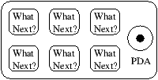
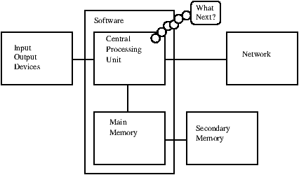
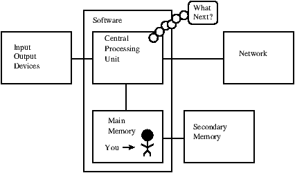

Chapter 1 Why should you learn to write programs?
Writing programs (or programming) is a very creative
and rewarding activity. You can write programs for
many reasons ranging from making your living to solving
a difficult data analysis problem to having fun to helping
someone else solve a problem. This book assumes that
everyone needs to know how to program and that once
you know how to program, you will figure out what you want
to do with your newfound skills.
We are surrounded in our daily lives with computers ranging
from laptops to cell phones. We can think of these computers
as our "personal assistants" who can take care of many things
on our behalf. The hardware in our current-day computers
is essentially built to continuously ask us the question,
"What would you like me to do next?".

Programmers add an operating system and a set of applications
to the hardware and we end up with a Personal Digital
Assistant that is quite helpful and capable of helping
many different things.
Our computers are fast and have vast amounts of memory and
could be very helpful to us if we only knew the language to
speak to explain to the computer what we would like it to
"do next". If we knew this language we could tell the
computer to do tasks on our behalf that were repetitive.
Interestingly, the kinds of things computers can do best
are often the kinds of things that we humans find boring
and mind-numbing.
For example, look at the first three paragraphs of this
chapter and tell me the most commonly used word and how
many times the word is used. While you were able to read
and understand the words in a few seconds, counting them
is almost painful because it is not the kind of problem
that human minds are designed to solve. For a computer
the opposite is true, reading and understanding text
from a piece of paper is hard for a computer to do
but counting the words and telling you how many times
the most used word was used is very easy for the
computer:
python words.py
Enter file:words.txt
to 16
Our "personal information analysis assistant" quickly
told us that the word "to" was used sixteen times in the
first three paragraphs of this chapter.
This very fact that computers are good at things
that humans are not is why you need to become
skilled at talking "computer language". Once you learn
this new language, you can delegate mundane tasks
to your partner (the computer), leaving more time
for you to do the
things that you are uniquely suited for. You bring
creativity, intuition, and inventiveness to this
partnership.
1.1 Creativity and motivation
While this book is not intended for professional programmers, professional
programming can be a very rewarding job both financially and personally.
Building useful, elegant, and clever programs for others to use is a very
creative activity. Your computer or Personal Digital Assistant (PDA)
usually contains many different programs from many different groups of
programmers, each competing for your attention and interest. They try
their best to meet your needs and give you a great user experience in the
process. In some situations, when you choose a piece of software, the
programmers are directly compensated because of your choice.
If we think of programs as the creative output of groups of programmers,
perhaps the following figure is a more sensible version of our PDA:

For now, our primary motivation is not to make money or please end-users, but
instead for us to be more productive in handling the data and
information that we will encounter in our lives.
When you first start, you will be both the programmer and end-user of
your programs. As you gain skill as a programmer and
programming feels more creative to you, your thoughts may turn
toward developing programs for others.
1.2 Computer hardware architecture
Before we start learning the language we
speak to give instructions to computers to
develop software, we need to learn a small amount about
how computers are built. If you were to take
apart your computer or cell phone and look deep
inside, you would find the following parts:

The high-level definitions of these parts are as follows:
- The Central Processing Unit (or CPU) is
that part of the computer that is built to be obsessed
with "what is next?". If your computer is rated
at 3.0 Gigahertz, it means that the CPU will ask "What next?"
three billion times per second. You are going to have to
learn how to talk fast to keep up with the CPU.
- The Main Memory is used to store information
that the CPU needs in a hurry. The main memory is nearly as
fast as the CPU. But the information stored in the main
memory vanishes when the computer is turned off.
- The Secondary Memory is also used to store
information, but it is much slower than the main memory.
The advantage of the secondary memory is that it can
store information even when there is no power to the
computer. Examples of secondary memory are disk drives
or flash memory (typically found in USB sticks and portable
music players).
- The Input and Output Devices are simply our
screen, keyboard, mouse, microphone, speaker, touchpad, etc.
They are all of the ways we interact with the computer.
- These days, most computers also have a
Network Connection to retrieve information over a network.
We can think of the network as a very slow place to store and
retrieve data that might not always be "up". So in a sense,
the network is a slower and at times unreliable form of
Secondary Memory
While most of the detail of how these components work is best left
to computer builders, it helps to have some terminology
so we can talk about these different parts as we write our programs.
As a programmer, your job is to use and orchestrate
each of these resources to solve the problem that you need solving
and analyze the data you need. As a programmer you will
mostly be "talking" to the CPU and telling it what to
do next. Sometimes you will tell the CPU to use the main memory,
secondary memory, network, or the input/output devices.

You need to be the person who answers the CPU's "What next?"
question. But it would be very uncomfortable to shrink you
down to 5mm tall and insert you into the computer just so you
could issue a command three billion times per second. So instead,
you must write down your instructions in advance.
We call these stored instructions a program and the act
of writing these instructions down and getting the instructions to
be correct programming.
1.3 Understanding programming
In the rest of this book, we will try to turn you into a person
who is skilled in the art of programming. In the end you will be a
programmer --- perhaps not a professional programmer but
at least you will have the skills to look at a data/information
analysis problem and develop a program to solve the problem.
In a sense, you need two skills to be a programmer:
- First you need to know the programming language (Python) -
you need to know the vocabulary and the grammar. You need to be able
spell the words in this new language properly and how to construct
well-formed "sentences" in this new languages.
- Second you need to "tell a story". In writing a story,
you combine words and sentences to convey an idea to the reader.
There is a skill and art in constructing the story and skill in
story writing is improved by doing some writing and getting some
feedback. In programming, our program is the "story" and the
problem you are trying to solve is the "idea".
Once you learn one programming language such as Python, you will
find it much easier to learn a second programming language such
as JavaScript or C++. The new programming language has very different
vocabulary and grammar but once you learn problem solving skills,
they will be the same across all programming languages.
You will learn the "vocabulary" and "sentences" of Python pretty quickly.
It will take longer for you to be able to write a coherent program
to solve a brand new problem. We teach programming much like we teach
writing. We start reading and explaining programs and then we write
simple programs and then write increasingly complex programs over time.
At some point you "get your muse" and see the patterns on your own
and can see more naturally how to take a problem and
write a program that solves that problem. And once you get
to that point, programming becomes a very pleasant and creative process.
We start with the vocabulary and structure of Python programs. Be patient
as the simple examples remind you of when you started reading for the first
time.
1.4 Words and sentences
Unlike human languages, the Python vocabulary is actually pretty small.
We call this "vocabulary" the "reserved words". These are words that
have very special meaning to Python. When Python sees these words in
a Python program, they have one and only one meaning to Python. Later
as you write programs you will make your own words that have meaning to
you called variables. You will have great latitude in choosing
your names for your variables, but you cannot use any of Python's
reserved words as a name for a variable.
In a sense, when we train a dog, we would use special words like,
"sit", "stay", and "fetch". Also when you talk to a dog and
don't use any of the reserved words, they just look at you with a
quizzical look on their faces until you say a reserved word.
For example, if you say,
"I wish more people would walk to improve their overall health.",
what most dogs likely hear is,
"blah blah blah walk blah blah blah blah."
That is because "walk" is a reserved word in dog language. Many
might suggest that the language between humans and cats has no
reserved words1.
The reserved words in the language where humans talk to
Python incudes the following:
and del for is raise
assert elif from lambda return
break else global not try
class except if or while
continue exec import pass yield
def ï¬ nally in print
That is it, and unlike a dog, Python is already completely trained.
When you say "try", Python will try every time you say it without
fail.
We will learn these reserved words and how they are used in good time,
but for now we will focus on the Python equivalent of "speak" (in
human to dog language). The nice thing about telling Python to speak
is that we can even tell it what to say by giving it a message in quotes:
print 'Hello world!'
And we have even written our first syntactically correct Python sentence.
Our sentence starts with the reserved word print followed
by a string of text of our choosing enclosed in single quotes.
1.5 Conversing with Python
Now that we have a word and a simple sentence that we know in Python,
we need to know how to start a conversation with Python to test
our new language skills.
Before you can converse with Python, you must first install the Python
software on your computer and learn how to start Python on your
computer. That is too much detail for this chapter so I suggest
that you consult www.pythonlearn.com where I have detailed
instructions and screencasts of setting up and starting Python
on Macintosh and Windows systems. At some point, you will be in
a terminal or command window and you will type python and
the Python interpreter will start executing in interactive mode:
and appear somewhat as follows:
Python 2.6.1 (r261:67515, Jun 24 2010, 21:47:49)
[GCC 4.2.1 (Apple Inc. build 5646)] on darwin
Type "help", "copyright", "credits" or "license" for more information.
>>>
The >>> prompt is the Python interpreter's way of asking you, "What
do you want me to do next?". Python is ready to have a conversation with
you. All you have to know is how to speak the Python language and you
can have a conversation.
Lets say for example that you did not know even the simplest Python language
words or sentences. You might want to use the standard line that astronauts
use when they land on a far away planet and try to speak with the inhabitants
of the planet:
>>> I come in peace, please take me to your leader
File "<stdin>", line 1
I come in peace, please take me to your leader
^
SyntaxError: invalid syntax
>>>
This is not going so well. Unless you think of something quickly,
the inhabitants of the planet are likely to stab you with their spears,
put you on a spit, roast you over a fire, and eat you for dinner.
Luckily you brought a copy of this book on your travels and you thumb to
this very page and try again:
>>> print 'Hello world!'
Hello world!
This is looking much better so you try to communicate some
more:
>>> print 'You must be the legendary god that comes from the sky'
You must be the legendary god that comes from the sky
>>> print 'We have been waiting for you for a long time'
We have been waiting for you for a long time
>>> print 'Our legend says you will be very tasty with mustard'
Our legend says you will be very tasty with mustard
>>> print 'We will have a feast tonight unless you say
File "<stdin>", line 1
print 'We will have a feast tonight unless you say
^
SyntaxError: EOL while scanning string literal
>>>
The conversation was going so well for a while and then you
made the tiniest mistake using the Python language and Python
brought the spears back out.
At this point, you should also realize that while Python
is amazingly complex and powerful and very picky about
the syntax you use to communicate with it, Python is not intelligent. You are having a conversation with
yourself but using proper syntax.
In a sense when you use a program written by someone else
the conversation is between you and those other
programmers with Python acting as an intermediary. Python
is a way for the creators of programs to express how the
conversation is supposed to proceed. And
in just a few more chapters, you will be one of those
programmers using Python to talk to the users of your program.
Before we leave our first conversation with the Python
interpreter, you should probably know the proper way
to say "good-bye" when interacting with the inhabitants
of Planet Python:
>>> good-bye
Traceback (most recent call last):
File "<stdin>", line 1, in <module>
NameError: name 'good' is not defined
>>> if you don't mind, I need to leave
File "<stdin>", line 1
if you don't mind, I need to leave
^
SyntaxError: invalid syntax
>>> quit()
You will notice that the error is different for the first two
incorrect attempts. The second error is different because
if is a reserved word and Python saw the reserved word
and thought we were trying to say something but got the syntax
of the sentence wrong.
The proper way to say "good-bye" to Python is to enter
quit() at the interactive chevron >>> prompt.
It would have probably taken you quite a while to guess that
one so having a book handy probably will turn out
to be helpful.
1.6 Terminology: interpreter and compiler
Python is a high-level language intended to be relatively
straightforward for humans to read and write and for computers
to read and process. Other high-level languages include: Java, C++,
PHP, Ruby, Basic, Perl, JavaScript, and many more. The actual hardware
inside the Central Processing Unit (CPU) does not understand any
of these high level languages.
The CPU understands a language we call machine-language. Machine
language is very simple and frankly very tiresome to write because it
is represented all in zeros and ones:
01010001110100100101010000001111
11100110000011101010010101101101
...
Machine language seems quite simple on the surface given that there
are only zeros and ones, but its syntax is even more complex
and far more intricate than Python. So very few programmers ever write
machine language. Instead we build various translators to allow
programmers to write in high level languages like Python or JavaScript
and these translators convert the programs to machine language for actual
execution by the CPU.
Since machine language is tied to the computer hardware, machine language
is not portable across different types of hardware. Programs written in
high-level languages can be moved between different computers by using a
different interpreter on the new machine or re-compiling the code to create
a machine language version of the program for the new machine.
These programming language translators fall into two general categories:
(1) interpreters and (2) compilers.
An interpreter reads the source code of the program as written by the
programmer, parses the source code, and interprets the instructions on-the-fly.
Python is an interpreter and when we are running Python interactively,
we can type a line of Python (a sentence) and Python processes it immediately
and is ready for us to type another line of Python.
Some of the lines of Python tell Python that you want it to remember some
value for later. We need to pick a name for that value to be remembered and
we can use that symbolic name to retrieve the value later. We use the
term variable to refer to the labels we use to refer to this stored data.
>>> x = 6
>>> print x
6
>>> y = x * 7
>>> print y
42
>>>
In this example, we ask Python to remember the value six and use the label x
so we can retrieve the value later. We verify that Python has actually remembered
the value using print. Then we ask Python to retrieve x and multiply
it by seven and put the newly-computed value in y. Then we ask Python to print out
the value currently in y.
Even though we are typing these commands into Python one line at a time, Python
is treating them as an ordered sequence of statements with later statements able
to retrieve data created in earlier statements. We are writing our first
simple paragraph with four sentences in a logical and meaningful order.
It is the nature of an interpreter to be able to have an interactive conversation
as shown above. A compiler needs to be handed the entire program in a file, and then
it runs a process to translate the high level source code into machine language
and then the compiler puts the resulting machine language into a file for later
execution.
If you have a Windows system, often these executable machine language programs have a
suffix of ".exe" or ".dll" which stand for "executable" and "dynamically loadable
library" respectively. In Linux and Macintosh there is no suffix that uniquely marks
a file as executable.
If you were to open an executable file in a text editor, it would look
completely crazy and be unreadable:
^?ELF^A^A^A^@^@^@^@^@^@^@^@^@^B^@^C^@^A^@^@^@\xa0\x82
^D^H4^@^@^@\x90^]^@^@^@^@^@^@4^@ ^@^G^@(^@$^@!^@^F^@
^@^@4^@^@^@4\x80^D^H4\x80^D^H\xe0^@^@^@\xe0^@^@^@^E
^@^@^@^D^@^@^@^C^@^@^@^T^A^@^@^T\x81^D^H^T\x81^D^H^S
^@^@^@^S^@^@^@^D^@^@^@^A^@^@^@^A\^D^HQVhT\x83^D^H\xe8
....
It is not easy to read or write machine language so it is nice that we have
interpreters and compilers that allow us to write in a high-level
language like Python or C.
Now at this point in our discussion of compilers and interpreters, you should
be wondering a bit about the Python interpreter itself. What language is
it written in? Is it written in a compiled language? When we type
"python", what exactly is happening?
The Python interpreter is written in a high level language called "C".
You can look at the actual source code for the Python interpreter by
going to www.python.org and working your way to their source code.
So Python is a program itself and it is compiled into machine code and
when you installed Python on your computer (or the vendor installed it),
you copied a machine-code copy of the translated Python program onto your
system. In Windows the executable machine code for Python itself is likely
in a file with a name like:
C:\Python27\python.exe
That is more than you really need to know to be a Python programmer, but
sometimes it pays to answer those little nagging questions right at
the beginning.
1.7 Writing a program
Typing commands into the Python interpreter is a great way to experiment
with Python's features, but it is not recommended for solving more complex problems.
When we want to write a program,
we use a text editor to write the Python instructions into a file,
which is called a script. By
convention, Python scripts have names that end with .py.
To execute the script, you have to tell the Python interpreter
the name of the file. In a Unix or Windows command window,
you would type python hello.py as follows:
csev$ cat hello.py
print 'Hello world!'
csev$ python hello.py
Hello world!
csev$
The "csev$" is the operating system prompt, and the "cat hello.py" is
showing us that the file "hello.py" has a one line Python program to print
a string.
We call the Python interpreter and tell it to read its source code from
the file "hello.py" instead of prompting us for lines of Python code
interactively.
You will notice that there was no need to have quit() at the end of
the Python program in the file. When Python is reading your source code
form a file, it knows to stop when it reaches the end of the file.
1.8 What is a program?
The definition of a program at its most basic is a sequence
of Python statements that have been crafted to do something.
Even our simple hello.py script is a program. It is a one-line
program and is not particularly useful, but in the strictest definition,
it is a Python program.
It might be easiest to understand what a program is by thinking about a problem
that a program might be built to solve, and then looking at a program
that would solve that problem.
Lets say you are doing Social Computing research on Facebook posts and
you are interested in the most frequently used word in a series of posts.
You could print out the stream of facebook posts and pore over the text
looking for the most common word, but that would take a long time and be very
mistake prone. You would be smart to write a Python program to handle the
task quickly and accurately so you can spend the weekend doing something
fun.
For example look at the following text about a clown and a car. Look at the
text and figure out the most common word and how many times it occurs.
the clown ran after the car and the car ran into the tent
and the tent fell down on the clown and the car
Then imagine that you are doing this task looking at millions of lines of
text. Frankly it would be quicker for you to learn Python and write a
Python program to count the words than it would be to manually
scan the words.
The even better news is that I already came up with a simple program to
find the most common word in a text file. I wrote it,
tested it, and now I am giving it to you to use so you can save some time.
name = raw_input('Enter file:')
handle = open(name, 'r')
text = handle.read()
words = text.split()
counts = dict()
for word in words:
counts[word] = counts.get(word,0) + 1
bigcount = None
bigword = None
for word,count in counts.items():
if bigcount is None or count > bigcount:
bigword = word
bigcount = count
print bigword, bigcount
You don't even need to know Python to use this program. You will need to get through
Chapter 10 of this book to fully understand the awesome Python techniques that were
used to make the program. You are the end user, you simply use the program and marvel
at its cleverness and how it saved you so much manual effort.
You simply type the code
into a file called words.py and run it or you download the source
code from http://www.pythonlearn.com/code/ and run it.
This is a good example of how Python and the Python language are acting as an intermediary
between you (the end-user) and me (the programmer). Python is a way for us to exchange useful
instruction sequences (i.e. programs) in a common language that can be used by anyone who
installs Python on their computer. So neither of us are talking to Python,
instead we are communicating with each other through Python.
1.9 The building blocks of programs
In the next few chapters, we will learn more about the vocabulary, sentence structure,
paragraph structure, and story structure of Python. We will learn about the powerful
capabilities of Python and how to compose those capabilities together to create useful
programs.
There are some low-level conceptual patterns that we use to construct programs. These
constructs are not just for Python programs, they are part of every programming language
from machine language up to the high-level languages.
- input:
- Get data from the the "outside world". This might be
reading data from a file, or even some kind of sensor like
a microphone or GPS. In our initial programs, our input will come from the user
typing data on the keyboard.
- output:
- Display the results of the program on a screen
or store them in a file or perhaps write them to a device like a
speaker to play music or speak text.
- sequential execution:
- Perform statements one after
another in the order they are encountered in the script.
- conditional execution:
- Check for certain conditions and
execute or skip a sequence of statements.
- repeated execution:
- Perform some set of statements
repeatedly, usually with
some variation.
- reuse:
- Write a set of instructions once and give them a name
and then reuse those instructions as needed throughout your program.
It sounds almost too simple to be true and of course it is never
so simple. It is like saying that walking is simply
"putting one foot in front of the other". The "art"
of writing a program is composing and weaving these
basic elements together many times over to produce something
that is useful to its users.
The word counting program above directly uses all of
these patterns except for one.
1.10 What could possibly go wrong?
As we saw in our earliest conversations with Python, we must
communicate very precisely when we write Python code. The smallest
deviation or mistake will cause Python to give up looking at your
program.
Beginning programmers often take the fact that Python leaves no
room for errors as evidence that Python is mean, hateful and cruel.
While Python seems to like everyone else, Python knows them
personally and holds a grudge against them. Because of this grudge,
Python takes our perfectly written programs and rejects them as
"unfit" just to torment us.
>>> primt 'Hello world!'
File "<stdin>", line 1
primt 'Hello world!'
^
SyntaxError: invalid syntax
>>> primt 'Hello world'
File "<stdin>", line 1
primt 'Hello world'
^
SyntaxError: invalid syntax
>>> I hate you Python!
File "<stdin>", line 1
I hate you Python!
^
SyntaxError: invalid syntax
>>> if you come out of there, I would teach you a lesson
File "<stdin>", line 1
if you come out of there, I would teach you a lesson
^
SyntaxError: invalid syntax
>>>
There is little to be gained by arguing with Python. It is a tool,
it has no emotion and it is happy and ready to serve you whenever you
need it. Its error messages sound harsh, but they are just Python's
call for help. It has looked at what you typed, and it simply cannot
understand what you have entered.
Python is much more like a dog, loving you unconditionally, having a few
key words that it understands, looking you with a sweet look on its
face (>>>) and waiting for you to say something it understands.
When Python says "SyntaxError: invalid syntax", it is simply wagging
its tail and saying, "You seemed to say something but I just don't
understand what you meant, but please keep talking to me (>>>)."
As your programs become increasingly sophisticated, you will encounter three
general types of errors:
- Syntax errors:
- These are the first errors you will make and the easiest
to fix. A syntax error means that you have violated the "grammar" rules of Python.
Python does its best to point right at the line and character where
it noticed it was confused. The only tricky bit of syntax errors is that sometimes
the mistake that needs fixing is actually earlier in the program than where Python
noticed it was confused. So the line and character that Python indicates in
a syntax error may just be a starting point for your investigation.
- Logic errors:
- A logic error is when your program has good syntax but there is a mistake
in the order of the statements or perhaps a mistake in how the statements relate to one another.
A good example of a logic error might be, "take a drink from your water bottle, put it
in your backpack, walk to the library, and then put the top back on the bottle."
- Semantic errors:
- A semantic error is when your description of the steps to take
is syntactically perfect and in the right order, but there is simply a mistake in
the program. The program is perfectly correct but it does not do what
you intended for it to do. A simple example would
be if you were giving a person directions to a restaurant and said, "... when you reach
the intersection with the gas station, turn left and go one mile and the restaurant
is a red building on your left.". Your friend is very late and calls you to tell you that
they are on a farm and walking around behind a barn, with no sign of a restaurant.
The you say "did you turn left or right gas station?" and
they say, "I followed your directions perfectly, I have
them written down, it says turn left and go one mile at the gas station.". Then you say,
"I am very sorry, because while my instructions were syntactically correct, they
sadly contained a small but undetected semantic error.".
Again in all three types of errors, Python is merely trying its hardest to
do exactly what you have asked.
1.11 The learning journey
As you progress through the rest of the book, don't be afraid if the concepts
don't seem to fit together well the first time. When you were learning to speak,
it was not a problem for your first few years you just made cute gurgling noises.
And it was OK if it took six months for you to move from simple vocabulary to
simple sentences and took 5-6 more years to move from sentences to paragraphs, and a
few more years to be able to write an interesting complete short story on your own.
We want you to learn Python much more rapidly, so we teach it all at the same time
over the next few chapters.
But it is like learning a new language that takes time to absorb and understand
before it feels natural.
That leads to some confusion as we visit and revisit
topics to try to get you to see the big picture while we are defining the tiny
fragments that make up the big picture. While the book is written linearly and
if you are taking a course, it will progress in a linear fashion, don't hesitate
to be very non-linear in how you approach the material. Look forwards and backwards
and read with a light touch. By skimming more advanced material without
fully understanding the details, you can get a better understanding of the "why?"
of programming. By reviewing previous material and even re-doing earlier
exercises, you will realize that you actually learned a lot of material even
if the material you are currently staring at seems a bit impenetrable.
Usually when you are learning your first programming language, there are a few
wonderful "Ah-Hah!" moments where you can look up from pounding away at some rock
with a hammer and chisel and step away and see that you are indeed building
a beautiful sculpture.
If something seems particularly hard, there is usually no value in staying up all
night and staring at it. Take a break, take a nap, have a snack, explain what you
are having a problem with to someone (or perhaps your dog), and then come back it with
fresh eyes. I assure you that once you learn the programming concepts in the book
you will look back and see that it was all really easy and elegant and it simply
took you a bit of time to absorb it.
1.12 Glossary
- bug:
- An error in a program.
- central processing unit:
- The heart of any computer. It is what
runs the software that we write; also called "CPU" or "the processor".
- compile:
- To translate a program written in a high-level language
into a low-level language all at once, in preparation for later
execution.
- high-level language:
- A programming language like Python that
is designed to be easy for humans to read and write.
- interactive mode:
- A way of using the Python interpreter by
typing commands and expressions at the prompt.
- interpret:
- To execute a program in a high-level language
by translating it one line at a time.
- low-level language:
- A programming language that is designed
to be easy for a computer to execute; also called "machine code" or
"assembly language."
- machine code:
- The lowest level language for software which
is the language that is directly executed by the central processing unit
(CPU).
- main memory:
- Stores programs and data. Main memory loses
its information when the power is turned off.
- parse:
- To examine a program and analyze the syntactic structure.
- portability:
- A property of a program that can run on more
than one kind of computer.
- print statement:
- An instruction that causes the Python
interpreter to display a value on the screen.
- problem solving:
- The process of formulating a problem, finding
a solution, and expressing the solution.
- program:
- A set of instructions that specifies a computation.
- prompt:
- When a program displays a message and pauses for the
user to type some input to the program.
- secondary memory:
- Stores programs and data and retains its
information even when the power is turned off. Generally slower
than main memory. Examples of secondary memory include disk
drives and flash memory in USB sticks.
- semantics:
- The meaning of a program.
- semantic error:
- An error in a program that makes it do something
other than what the programmer intended.
- source code:
- A program in a high-level language.
1.13 Exercises
Exercise 1
What is the function of the secondary memory in a computer?
a) Execute all of the computation and logic of the program
b) Retrieve web pages over the Internet
c) Store information for the long term - even beyond a power cycle
d) Take input from the user
Exercise 2
What is a program?
Exercise 3
What is is the difference between a compiler and an interpreter?
Exercise 4
Which of the following contains "machine code"?
a) The Python interpreter
b) The keyboard
c) Python source file
d) A word processing document
Exercise 5
What is wrong with the following code:
>>> primt 'Hello world!'
File "<stdin>", line 1
primt 'Hello world!'
^
SyntaxError: invalid syntax
>>>
Exercise 6
Where in the computer is a variable such as "X" stored
after the following Python line finishes?
x = 123
a) Central processing unit
b) Main Memory
c) Secondary Memory
d) Input Devices
e) Output Devices
Exercise 7
What will the following program print out:
x = 43
x = x + 1
print x
a) 43
b) 44
c) x + 1
d) Error because x = x + 1 is not possible mathematically
Exercise 8
Explain each of the following using an example of a human capability:
(1) Central processing unit, (2) Main Memory, (3) Secondary Memory,
(4) Input Device, and
(5) Output Device.
For example, "What is the human equivalent to a Central Processing Unit"?
Exercise 9
How do you fix a "Syntax Error"?
- 1
- http://xkcd.com/231/